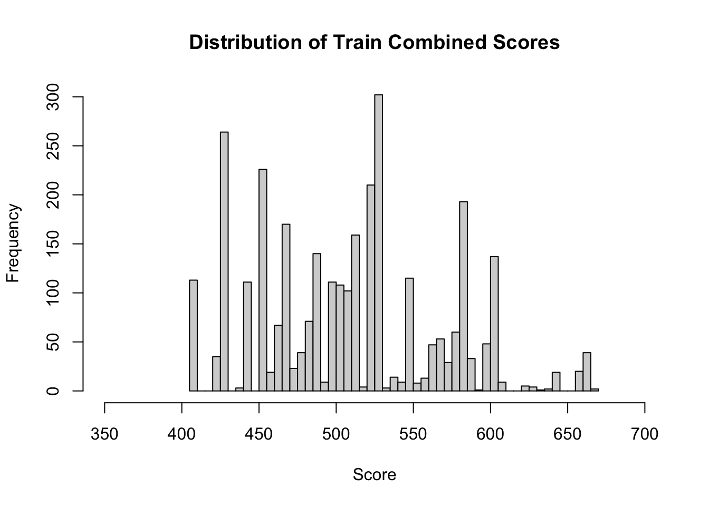

Chapter 7 Add Scores to Train Comb from Final Model
Our Points should almost double from our original model since we are weighting the good in the accepts as around 46 (about an aditional half of their original score) whereas in just the accepts we are weighting them as 30, we are also weighting the bads in the accepts as 1.5 also an additional half of their original score and giving just the rejects a weight of 1 this should ultimately cause the coefficients of our WoE vars to increase in our final model in comparison to our initial model resulting in almost doubling the points individuals get for each bin they fall in.
# Add Scores to Initial Model #
pdo_f <- 50
score_f <- 500
odds_f <- 20
fact_f <- pdo_f/log(2)
os_f <- score_f - fact_f*log(odds_f)
var_names_f <- names(final_score$coefficients[-1])
for(i in var_names_f) {
beta_f <- final_score$coefficients[i]
beta0_f <- final_score$coefficients["(Intercept)"]
nvar_f <- length(var_names_f)
WOE_var_f <- train_comb[[i]]
points_name_f <- paste(str_sub(i, end = -4), "points", sep="")
train_comb[[points_name_f]] <- -(WOE_var_f*(beta_f) + (beta0_f/nvar_f))*fact_f + os_f/nvar_f
}
colini_f <- (ncol(train_comb)-nvar_f + 1)
colend_f <- ncol(train_comb)
train_comb$Score <- rowSums(train_comb[, colini_f:colend_f])
hist(train_comb$Score, breaks = 50, xlim = c(350,700), main = "Distribution of Train Combined Scores", xlab = "Score")